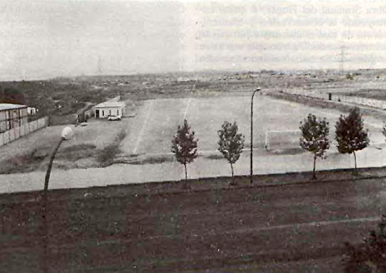
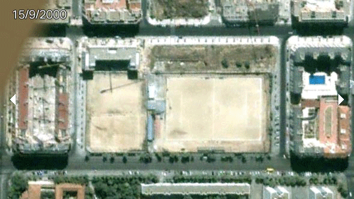
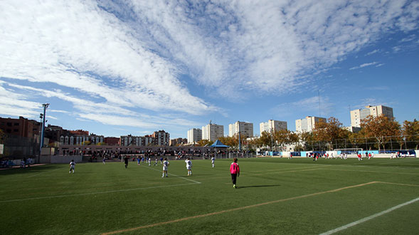
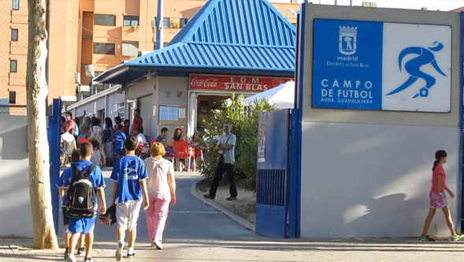
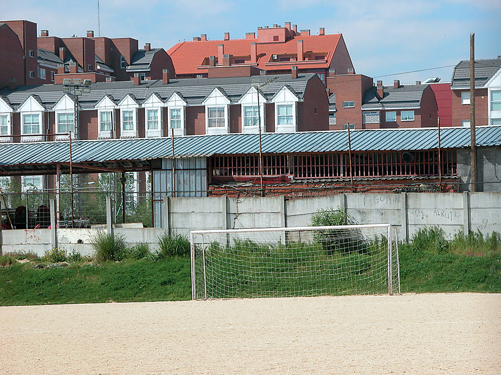
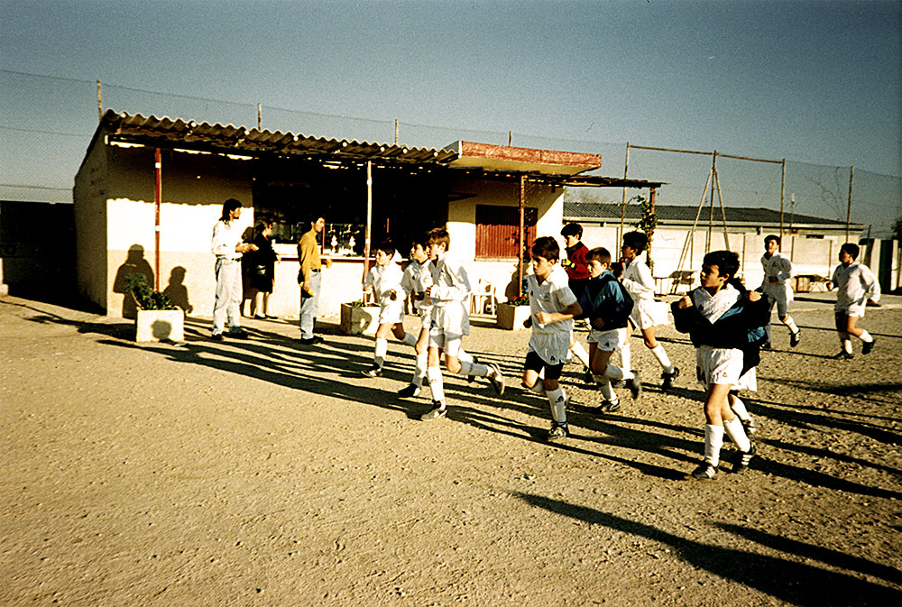
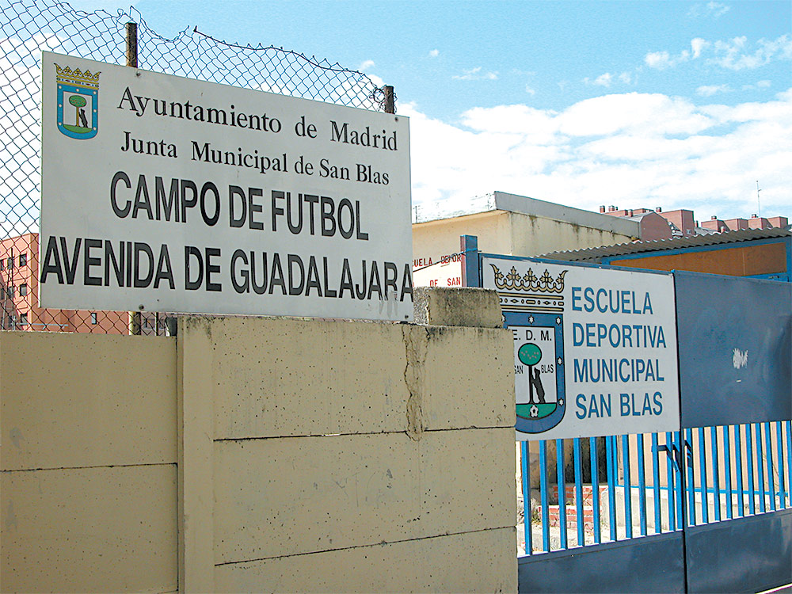

25 años: De las llamas del infierno a tocar el cielo
Nos situamos en los años noventa. Un panorama desolador. Los vecinos de San Blas deambulan por las calles del barrio madrileño incrédulos ante el infierno que les ha tocado vivir. La droga ha irrumpido con fuerza. El antiguo campo de fútbol de "Las Banderas" supone la prolongación de uno de los mayores epicentros de droga de todo el país. Muchos de los jóvenes caen en las garras de la peor de las adicciones y familiares y amigos son testigos de la masacre paulatina que acaba de instalarse en el municipio.
En este decorado aterrador emerge la figura de Don Pedro Blázquez Sánchez que, en 1991, escribe la primera página de la historia de la Escuela Deportiva Municipal de San Blas. Un nuevo proyecto lleno de ilusiones que da luz y esperanza a un barrio maltrecho y tremendamente castigado.
La creación de la Escuela, por tanto, no afecta sólo al ámbito deportivo sino especialmente al social. Los jóvenes encuentran así una vía para hacer lo que más les gusta, jugar al fútbol, pudiendo evadirse, en la medida de lo posible, del infierno que les ha tocado vivir. No sin muchas dificultades, la Escuela empieza a funcionar gracias a las aportaciones de los padres y los esfuerzos de su presidente.
Las piedras en el camino cada vez son más difíciles de sortear con el paso de los años. La doble lucha deportiva-social hace mella en las fuerzas de Pedro, que ve como en el año 1995 se produce el momento de mayor decadencia desde su nacimiento. El mero hecho de vagar por la Avenida Guadalajara se convierte en un riesgo para la integridad de cualquier joven, debido a los numerosos robos y falta de higiene de la zona.
El actual presidente decide apoyarse en el hombro de Don Jesús Gutiérrez, que toma las riendas de la Escuela bajo el cargo de Director General. Se acuerda nombrar una Junta Directiva, con Don Julián Pedroche como Secretario General y responsable de las instalaciones. Un pequeño haz de esperanza se vislumbra entonces en el futuro incierto del club.
Tras la lucha incesante de los vecinos del barrio, la droga pasa finalmente a un segundo plano. Se logra extinguir y erradicar a las cientos de chabolas que daban sentido a la venta, siendo la Escuela una baza fundamental en el feliz desenlace. Tras haberse cobrado cientos de vidas en el camino, San Blas ve finalmente un futuro esperanzador para los más pequeños. Hablamos por primera vez única y exclusivamente de fútbol.
Se crean varios equipos en distintas categorías - desde Benjamín hasta Juvenil - y se inscriben todos ellos en la Federación de Fútbol Madrileña. En este momento el aspecto humano toma una mayor fuerza que el deportivo, anteponiendo la felicidad y el bienestar de los chicos por encima de todo, independientemente de su nivel futbolístico.
No obstante, el talento y el tesón de muchos de nuestros jugadores les lleva a partir a equipos de élite en busca de retos mayores, con la ilusión por bandera para llegar a convertirse algún día en grandes figuras del fútbol.
En el año 2000 tiene lugar la fatídica muerte de nuestro presidente y fundador Don Pedro Blázquez Sánchez. Pedro nos deja como herencia el esfuerzo y la vitalidad de nueve años dedicados a la Institución, recogiendo así el afecto y el cariño general de todos los jugadores y padres de su Escuela. Tan ligado estuvo a la Escuela Deportiva Municipal de San Blas que, con su marcha, se desprende una parte de nuestra historia, siempre presente en la memoria de todas las personas que le conocieron.
Éstas son palabras del actual presidente, Don Jesús Gutiérrez, recogidas tras las muerte de Pedro: "Con estas líneas quiero enviar mi recuerdo más cariñoso a la persona que en cinco años de trato directo, me hizo mejor persona y me enseñó que en la vida no hace falta ser familiar para quererse como tal. Va por ti Pedro Blázquez y sé que Dios te tiene a su lado por lo buena persona que fuiste, eres, y serás..."
En el año 2004, ya bajo la presidencia de Don Jesús Gutiérrez Corredor, se llevan a cabo las reformas más importantes hasta la fecha, afectando principalmente a las infraestructuras y al proyecto deportivo. Una gran 'alfombra verde' cubre el terreno de juego de la Avenida Guadalajara. Tras muchos años persiguiendo el sueño, finalmente el Municipal de San Blas se une a la privilegiada lista de campos de césped de la Comunidad de Madrid. Junto a ello, se levanta una espectacular grada cubierta para dar cabida a más de 300 espectadores. A nivel deportivo los niveles de exigencia y ambición van creciendo progresivamente, sobre todo con la llegada al cargo de Director Deportivo de Don Antonio Mezquita, procedente de las categorías inferiores del Real Madrid CF y mano derecha de Don Vicente Del Bosque.
El legado que deja Antonio Mezquita no se puede contabilizar ni con palabras ni con hechos. Su corazón deja de latir en el mes de febrero de 2011. Tras una grave y repentina enfermedad, el natural de Zamora de 75 años pone punto y final a una vida dedicada al deporte y a los más pequeños. Muchos años de entrenamientos, miles de horas de frío sobre los campos de la Avenida Guadalajara, viajes por todo el mundo mientras cuidaba de su mujer enferma, su gran tesoro. Mezquita se despide y pone punto y final a una vida ilustrada y exitosa tanto en lo deportivo como lo personal. San Blas y toda su gente siempre tendrán hueco en sus corazones para él.
En la temporada 2004/05 se produce un salto cualitativo, sumando un total de trece equipos y agrupando a más de 200 niños, una cifra desorbitada. Un año siguiente el crecimiento es aún mayor. El nacimiento del barrio de Las Rosas rejuvenece la zona y se incorporan seis equipos más, haciendo un total de diecinueve.
En las vitrinas por aquel entonces lucen tres campeonatos de liga, dos en la categoría de Cadete y uno en Juvenil. El primero se logra en la 97/98, con José Alonso de entrenador. El segundo, dirigido por Alberto Cardenete, tras cuajar una temporada inmaculada en la que el equipo acaba invicto. En el año 2004, con Fernando Vidal en el banquillo, nuestra Escuela canta el alirón en la categoría Juvenil en el Polideportivo de Vicálvaro tras golear a la Unión, uno de los candidatos al ascenso (1-4).
En el año 2005 tiene lugar uno de los momentos más injustos en nuestros quince años de vida. La Escuela Deportiva Municipal de San Blas y el Valencia CF. firman un acuerdo de colaboración y se funda la Escuela Mestalla - San Blas. Lo que a priori suponía un soplo de aire fresco y un amplio abanico de posibilidades y mejoras para nuestra Escuela, terminó por decantarse en promesas incumplidas y mentiras del club valenciano hacia nuestra humilde institución. Ese mismo año, nuestros pequeños del Prebenjamín A se proclaman campeones de Liga, al igual que nuestro Infantil A, que la próxima temporada jugaría en la máxima categoría, Autonómica. También nuestro Alevín B y nuestro Cadete C consiguen ascender en sus respectivas categorías.
Un año después, en la temporada 2006/2007, se produce el crecimiento definitivo en cuanto a número de alumnos. Llegamos a la impresionante cifra de 535 entre chicos y chicas, repartidos en los siguientes equipos: 7 equipos de categoría Prebenjamín, 8 de Benjamín, 4 de Alevín, 4 de Infantil, 4 de Cadete, 3 de Juvenil y el nuevo equipo Aficionado, el nuevo espejo para todos nuestros pequeños.
Los éxitos siguen acumulándose año tras año desde entonces. En la temporada 2007/2008, nuestro Infantil B se proclama campeón de Liga y consuma su ascenso a Preferente. También los más pequeños, Prebenjamín A y Benjamín A, forjan una leyenda viva con la primera de las cuatro ligas consecutivas que iban a lograr en años posteriores, muestra inequívoca del trabajo bien hecho desde abajo.
En la temporada 2008/2009, el Infantil A y el Alevín B engordarían nuestro groso de títulos. Un año más tarde, el Infantil C sumaría una nueva copa, coincidiendo con el ascenso de nuestro equipo Senior que, tras dar varios tumbos en la categoría Regional, con un ascenso y descenso por medio incluidos, cimentaba las bases de un nuevo proyecto con jóvenes jugadores, la mayoría de ellos nacidos y educados futbolísticamente en nuestra Escuela.
En la temporada más reciente, la 2010/2011, David Martínez y sus pupilos continúan con su andadura exitosa en la categoría de Alevines, proclamándose flamantemente campeones demostrando una vez más que la cantera está más fuerte que nunca. Pero sin duda, es el campeonato de liga del Aficionado el colofón de un año lleno de luces. Chema Olmedo endereza un irregular principio de temporada y lleva al equipo hasta lo más alto, permitiendo que el año que viene podamos disfrutar de la Escuela Deportiva Municipal de San Blas en Primera Regional por primera vez en sus 20 años de historia. Igual de celebrado es el éxito de Pérez González y el Juvenil A que, tras varios años quedándose a las puertas del ascenso, sellan su billete a Preferente.
Sangre, sudor y lágrimas. Muchas horas de trabajo y de esfuerzo. Sacrificios y madrugones con el único fin de dar sentido a los fines de semana de unos niños cuya única preocupación es la de dar patadas a un balón de fútbol. Felizmente, hoy podemos presumir con la cabeza bien alta de hablar solo de deporte. Es por ello que toda la familia de la Escuela Deportiva Municipal de San Blas se siente tremendamente orgullosa del legado y el tesoro que ha conseguido. Un pasado oscuro, un presente brillante y un futuro aún más esperanzador. La historia continúa.